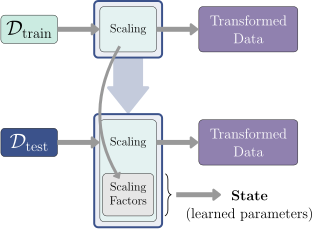
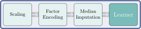
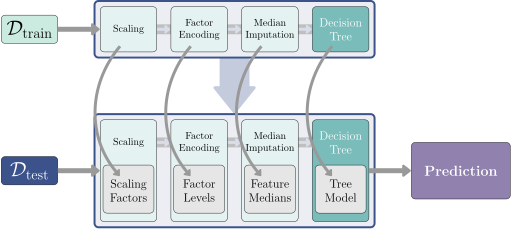

set.seed(1)
task = as_task_regr(cars, target = "dist")
learner_rpart = lrn("regr.rpart")
resampling = rsmp("holdout")
resample(task, learner_rpart, resampling)7 Sequential Pipelines
Martin Binder
Ludwig-Maximilians-Universität München, and Munich Center for Machine Learning (MCML)
Florian Pfisterer
Ludwig-Maximilians-Universität München
Machine learning (ML) toolkits often try to abstract away the processes inside ML algorithms. These toolkits provide a layer of abstraction, allowing users to swap one algorithm for another without having to worry about specifics of each algorithm. The benefit of using mlr3, for example, is that one can use any Learner, Task, or Resampling object and use them for typical ML operations, mostly independently of what algorithms or datasets they represent. In the following code snippet, it would be trivial to swap in a different learner than lrn("regr.rpart") without having to worry about implementation details:
However, this modularity breaks down as soon as the learning process encompasses more than just model fitting, like data preprocessing, building ensemble-models or even more complicated meta-models. This is where mlr3pipelines (Binder et al. 2021) steps in: it takes modularity one step further than mlr3 and makes it possible to build individual steps within a Learner out of building blocks that manipulate data. Individual, frequently encountered building blocks, such as missing value imputation or majority vote ensembling, are provided as an (R6-)object, which we call a PipeOp. These PipeOps can be connected using directed edges inside a Graph (or “Pipeline”) to represent the flow of data between operations.
PipeopGraph
Tip
The Graph class represents an object similar to a directed acyclic graph (DAG), since the input of a PipeOp can not depend on its output and hence cycles are not allowed. However, the resemblance to a DAG is not perfect, since the Graph class allows for multiple edges between nodes. A term such as “directed acyclic multigraph” would be more accurate, but we will stick to the term “Graph” for simplicity.
Some examples of operations that can be performed with mlr3pipelines are:
- Data manipulation and preprocessing operations, e.g. PCA, feature filtering, missing value imputation.
- Task subsampling for speed or for handling of imbalanced classes.
- Ensemble methods and aggregation of predictions.
- Simultaneous model selection and hyperparameter tuning of both learners and preprocessing operators, by using
mlr3tuning. This is sometimes facetiously referred to as “CASH”, standing for “Combined Algorithm Selection and Hyperparameter optimization” (Thornton et al. 2013).
During model training, the PipeOps in a Graph operate on a given dataset and transform it. PipeOps that come later in a Graph get the already transformed data as input. The Graph can therefore be thought of as a network representing function composition. However, besides transforming data, PipeOps also generate a state, similar to how learners train model parameters. This state is used to inform the PipeOp’s operation during prediction.
As a simple example, consider scaling features to have unit variance po("scale", center = FALSE) (Figure fig-pipelines-state). During training, it calculates and divides by the standard deviation of each feature. For prediction, it would be wrong to divide by the standard deviation of the prediction dataset; instead the same scaling factors as during training should be used. The PipeOp therefore stores the scaling factors of each feature in its state, to be used during prediction. Each PipeOp stores its own state independently of other PipeOps. A very simple sequential Graph that does various preprocessing operations before fitting a learner is displayed in Figure fig-pipelines-example (a). Figure fig-pipelines-example (b) shows a more elaborate pipeline that does alternative path branching.

$train() of the “Scaling” PipeOp both transforms data (rectangles) as well as creates a state: the scaling factors, necessary to transform data during prediction.When evaluating the performance of an ML process consisting e.g. of preprocessing, followed by model fitting, it is strongly advised to always put the entire preprocessing operation inside the resampling loop, as is done here – mlr3pipelines encourages this more accurate approach. Making a PCA on the entirety of a dataset, followed by resampling a learner on it, would effectively leak information from the training set to the test set, leading to biased results.
7.1 mlr3pipelines by Example
In the following, we provide a brief example of mlr3pipelines to give you a quick idea of what it is capable of. The dataflow programming concept implemented by mlr3pipelines is very intuitive, and seeing a few code snippets will already give you a clear idea of how to use it. In subsequent chapters, we will elaborate on each of the concepts used here.


$plot() method of a Graph object.PipeOps can be easily created using the po() constructor function. Similar to learners, they have hyperparameters that can be set during construction as well as by using the $param_set$values field, as demonstrated in sec-param-set. The following sets the scale. hyperparameter, which corresponds to the scale. argument of the prcomp() function that underlies po("pca"):
library("mlr3pipelines")
pca = po("pca", scale. = TRUE)PipeOps can be combined to form Graphs. The simplest way to combine PipeOps is to use the %>>%-operator. To create a Graph that trains a model, combine PipeOps with a Learner. The $plot() method can be used to display the structure of the created Graph.
graph = pca %>>% lrn("classif.rpart")
graph$plot(horizontal = TRUE)
A Graph in which the last operation is a Learner can itself be transformed into a learner, which performs the operations represented by the Graph in order, by using as_learner().
graph_learner = as_learner(graph)
graph_learner$train(tsk("iris"))Notice how the decision variables in the model are not the columns of the original dataset, but rather the principal components extracted by po("pca").
graph_learner$model$classif.rpart$modeln= 150
node), split, n, loss, yval, (yprob)
* denotes terminal node
1) root 150 100 setosa (0.333 0.333 0.333)
2) PC1< -1.15 50 0 setosa (1.000 0.000 0.000) *
3) PC1>=-1.15 100 50 versicolor (0.000 0.500 0.500)
6) PC1< 1.1 50 5 versicolor (0.000 0.900 0.100) *
7) PC1>=1.1 50 5 virginica (0.000 0.100 0.900) *resample(), benchmark(), and tune() work for this object just as for any other Learner.
rr = resample(tsk("iris"), graph_learner, rsmp("cv"))
rr$aggregate()classif.ce
0.107
7.2 PipeOp: Pipeline Operators
The most fundamental unit of functionality within mlr3pipelines is the PipeOp, short for “pipeline operator”. It represents a transformative operation on input (for example, a training dataset), resulting in output. Like a learner, it possesses a $train() and a $predict() function; however, unlike a learner, the $train() function can also return a result. The training phase typically generates a particular model of the data, which is saved as internal state. The prediction phase then operates on the prediction data based on the trained model. Therefore, just like a learner, a PipeOp has “parameters” (i.e., the state) that are trained, but also “hyperparameters” that users can set. An illustration of this behavior is the principal component analysis operation (po("pca")), which we have already seen in the previous section:
pca = po("pca")
pcaPipeOp: <pca> (not trained)
values: <list()>
Input channels <name [train type, predict type]>:
input [Task,Task]
Output channels <name [train type, predict type]>:
output [Task,Task]When printed, various aspects of this PipeOp can be observed: The first line tells us the ID of the PipeOp (“pca”) and that it is not trained yet, therefore lacking a $state. The second line would tell us about hyperparameter values. However, this is an empty list here, as we are using the default settings of po("pca"). The remaining lines provide information about the input and output types of this PipeOp. The PCA PipeOp takes one input (named “input”) of type “Task”, both during training and prediction (thus “[Task,Task]). It produces one output (named”output“), also of type”Task” during both phases.
Training is conducted using the $train()-method. Unlike the learner’s $train() method, we can imagine the PipeOp’s $train() as potentially having multiple inputs and outputs. This is implemented through lists: Both the $train() input and output of a PipeOp are always lists; the number of elements of these lists depends on the operation. For example, the po("pca") PipeOp only transforms a single dataset and is thus invoked with a list containing a single element, the training data task. It returns a modified task with features replaced by their principal components.
poin = list(tsk("iris"))
poout = pca$train(poin)
poout$output
<TaskClassif:iris> (150 x 5): Iris Flowers
* Target: Species
* Properties: multiclass
* Features (4):
- dbl (4): PC1, PC2, PC3, PC4poout[[1]]$head() Species PC1 PC2 PC3 PC4
1: setosa -2.68 0.319 -0.0279 -0.00226
2: setosa -2.71 -0.177 -0.2105 -0.09903
3: setosa -2.89 -0.145 0.0179 -0.01997
4: setosa -2.75 -0.318 0.0316 0.07558
5: setosa -2.73 0.327 0.0901 0.06126
6: setosa -2.28 0.741 0.1687 0.02420During training, the PCA transforms incoming data by rotating it in such a way that features become uncorrelated and are ordered by their contribution to total variance. The rotation matrix is also saved to be applied to new data during the “prediction phase”. This allows for “prediction” with single rows of new data, where a row’s scores on each of the principal components (the components of the training data!) are computed.
Similarly to $train(), the $predict() function operates on lists:
single_line_iris = tsk("iris")$filter(1)
single_line_iris$data() Species Petal.Length Petal.Width Sepal.Length Sepal.Width
1: setosa 1.4 0.2 5.1 3.5poin = list(single_line_iris)
poout = pca$predict(poin)
poout[[1]]$data() Species PC1 PC2 PC3 PC4
1: setosa -2.68 0.319 -0.0279 -0.00226The internal state that is trained in the $train() call is stored in the $state field (shown in Figure fig-pipelines-state). It is analogous to the $model field of a learner, and its content depends on the class of PipeOp being used.
pca$stateStandard deviations (1, .., p=4):
[1] 2.056 0.493 0.280 0.154
Rotation (n x k) = (4 x 4):
PC1 PC2 PC3 PC4
Petal.Length 0.8567 -0.1734 0.0762 0.480
Petal.Width 0.3583 -0.0755 0.5458 -0.754
Sepal.Length 0.3614 0.6566 -0.5820 -0.315
Sepal.Width -0.0845 0.7302 0.5979 0.320
7.2.1 Creating PipeOps
Each PipeOp is an instance of an R6 class, with many classes provided by the mlr3pipelines package itself. They can be retrieved from the mlr_pipeops dictionary, most easily by using the po() convenience function. A shortcut for creating lists of PipeOps from a vector of names is pos(). When retrieving PipeOps from the mlr_pipeops dictionary, it is also possible to provide additional constructor arguments, such as an ID or hyperparameter settings.
po("pca", rank. = 3, id = "pca2")PipeOp: <pca2> (not trained)
values: <rank.=3>
Input channels <name [train type, predict type]>:
input [Task,Task]
Output channels <name [train type, predict type]>:
output [Task,Task]Note how the printed output for this PipeOp differs from the one shown for po("pca") above: It has a different ID, and the fact that the rank. setting differs from the default is also shown.
Some PipeOps, in fact, require construction arguments, for example when they are operators that wrap another mlr3-object.
po_learner = po("learner", learner = lrn("classif.rpart"))Calling po() by itself prints all available PipeOps. You can use as.data.table(po()) to get a more detailed list with additional meta-data. The current list of all PipeOps contained in mlr3pipelines with links to their documentation can also be found on the mlr website1.
po()<DictionaryPipeOp> with 64 stored values
Keys: boxcox, branch, chunk, classbalancing, classifavg,
classweights, colapply, collapsefactors, colroles, copy,
datefeatures, encode, encodeimpact, encodelmer, featureunion,
filter, fixfactors, histbin, ica, imputeconstant, imputehist,
imputelearner, imputemean, imputemedian, imputemode,
imputeoor, imputesample, kernelpca, learner, learner_cv,
missind, modelmatrix, multiplicityexply, multiplicityimply,
mutate, nmf, nop, ovrsplit, ovrunite, pca, proxy, quantilebin,
randomprojection, randomresponse, regravg, removeconstants,
renamecolumns, replicate, scale, scalemaxabs, scalerange,
select, smote, spatialsign, subsample, targetinvert,
targetmutate, targettrafoscalerange, textvectorizer,
threshold, tunethreshold, unbranch, vtreat, yeojohnsonIn some cases where an operation is needed that is not provided by mlr3pipelines, it may be necessary to create custom PipeOps. The mlr3pipelines package contains a vignette on how to do this, which can be accessed by running vignette("extending", package = "mlr3pipelines") in R, or online2.
7.3 Graph: Networks of PipeOps
7.3.1 Basics: Building a Graph
PipeOps are used to represent individual computational steps in ML pipelines. These pipelines themselves are defined by Graph objects. A Graph is a collection of PipeOps with “edges” that guide the flow of data.
The most convenient way of building a Graph is to connect a sequence of PipeOps using the %>>% (“double-arrow”) operator. When given two PipeOps, this operator creates a Graph that first executes the left-hand PipeOp, followed by the right-hand one. It can also be used to connect a Graph with a PipeOp, or with another Graph. The following example creates a Graph that first adds a Petal.Area feature to a given dataset, and then performs scaling and centering of all numeric features.
po_area = po("mutate",
mutation = list(Petal.Area = ~Petal.Width * Petal.Length)
)
po_scale = po("scale")
gr = po_area %>>% po_scale
print(gr)Graph with 2 PipeOps:
ID State sccssors prdcssors
mutate <<UNTRAINED>> scale
scale <<UNTRAINED>> mutateThe printer provides information about the layout of the Graph: For each PipOp (column “ID”), it displays information about its state, as well as a list of its successors (“sccssors”, i.e. which PipeOps are connected to its output and come directly after it) and its predecessors (“prdcssors”, which PipeOps are connected to its input). For this simple Graph, we see that the output of the PipeOp with the ID “mutate” is given to the one with ID “scale”. While the printer of a Graph gives some information about its layout, the most intuitive way of visualizing it is using the $plot() function.
gr$plot(horizontal = TRUE)
7.3.2 Graphs are Nodes with Edges
Internally, Graphs are collections of PipeOps with edges connecting them. The collection of PipeOps inside a Graph can be accessed through the $pipeops field. The set of edges in the Graph can be examined through the $edges field. It is a data.table listing the “source” (src_id, src_channel) and “destination” (dst_id, dst_channel) of data flowing along each edge.
gr$pipeops$mutate
PipeOp: <mutate> (not trained)
values: <mutation=<list>, delete_originals=FALSE>
Input channels <name [train type, predict type]>:
input [Task,Task]
Output channels <name [train type, predict type]>:
output [Task,Task]
$scale
PipeOp: <scale> (not trained)
values: <robust=FALSE>
Input channels <name [train type, predict type]>:
input [Task,Task]
Output channels <name [train type, predict type]>:
output [Task,Task]gr$edges src_id src_channel dst_id dst_channel
1: mutate output scale inputBesides using the %>>%-operator to create Graphs, it is also possible to create them explicitly. A Graph is empty when first created, and PipeOps can be added using the $add_pipeop() method. The $add_edge() method is used to create connections between them. The above Graph can therefore also be created in the following way:
gr = Graph$new()
gr$add_pipeop(po_area)
gr$add_pipeop(po_scale)
gr$add_edge("mutate", "scale") # address by PipeOp-ID
Warning
Although it is also possible to modify individual PipeOps and edges in a Graph through the $pipeops and $edges fields, this is not recommended, as no error checking is performed and it may put the Graph in an invalid state. Only do this if you know what you are doing.
7.3.3 Using a Graph
A Graph itself has a $train() and a $predict() method that accept some data and propagate this data through the network of PipeOps, by calling their respective $train() and $predict() methods. The return value is the output of the PipeOp(s) without outgoing edges. Just like for PipeOps, the output is a list.
result = gr$train(tsk("iris"))
result$scale.output
<TaskClassif:iris> (150 x 6): Iris Flowers
* Target: Species
* Properties: multiclass
* Features (5):
- dbl (5): Petal.Area, Petal.Length, Petal.Width,
Sepal.Length, Sepal.Widthresult[[1]]$head() Species Petal.Area Petal.Length Petal.Width Sepal.Length Sepal.Width
1: setosa -1.17 -1.34 -1.31 -0.898 1.0156
2: setosa -1.17 -1.34 -1.31 -1.139 -0.1315
3: setosa -1.17 -1.39 -1.31 -1.381 0.3273
4: setosa -1.17 -1.28 -1.31 -1.501 0.0979
5: setosa -1.17 -1.34 -1.31 -1.018 1.2450
6: setosa -1.09 -1.17 -1.05 -0.535 1.9333result = gr$predict(single_line_iris)
result[[1]]$head() Species Petal.Area Petal.Length Petal.Width Sepal.Length Sepal.Width
1: setosa -1.17 -1.34 -1.31 -0.898 1.02
7.3.4 Debugging a Graph with Intermediate Results
When Graphs are evaluated, they do not keep intermediate results for memory efficiency, unless the $keep_results flag is set first. Inspecting these results may help understanding the inner workings of Graphs, in particular when they produce unexpected results.
gr$keep_results = TRUE
result = gr$predict(single_line_iris)
intermediate = gr$pipeops$mutate$.result
intermediate$output
<TaskClassif:iris> (1 x 6): Iris Flowers
* Target: Species
* Properties: multiclass
* Features (5):
- dbl (5): Petal.Area, Petal.Length, Petal.Width,
Sepal.Length, Sepal.Widthintermediate[[1]]$data() Species Petal.Length Petal.Width Sepal.Length Sepal.Width Petal.Area
1: setosa 1.4 0.2 5.1 3.5 0.28
7.4 Sequential Learner-Pipelines
Possibly the most common application for mlr3pipelines is to use it to perform basic preprocessing tasks, such as missing value imputation or factor encoding, and to then feed the resulting data into a Learner. A Graph representing this workflow manipulates data and fits a Learner-model during training, and uses the fitted model with data that has been similarly preprocessed during prediction. Conceptually, the process may look as shown in Figure fig-pipelines-pipeline.

$state. Finally, the learner receives the data and a model is created. During prediction (bottom row), data is likewise transformed by preprocessing operators, using their respective $state information in the process. The learner then receives data that has the same format as the data seen during training, and makes a prediction.While a Learner is not a PipeOp by itself, it can be readily converted into one using as_pipeop(), or alternatively po("learner"), which creates a PipeOpLearner-wrapper-class.
However, this conversion is rarely necessary, as the %>>%-operator automatically converts learners to PipeOps. The following code creates a Graph that adds a Petal.Area feature, followed by fitting a "classif.rpart" decision tree model.
po_area = po("mutate",
mutation = list(Petal.Area = ~Petal.Width * Petal.Length)
)
gr = po_area %>>% learner_rpart # could just as well use po_rpart
gr$plot(horizontal = TRUE)
To use a Graph as a learner within mlr3, it is necessary to wrap it in a GraphLearner object. This is because there are various differences between the classes, most notably the return values of the $train() and $predict() methods. A Graph can be converted to a GraphLearner using as_learner().
graph_learner = as_learner(gr)This learner can be used like any other Learner. In particular it can be used with resample() and benchmark(). Let us compare our sequential pipeline with the "classif.rpart"-Learner by itself:
grid = benchmark_grid(
tsks("iris"),
list(graph_learner, learner_rpart),
rsmps("repeated_cv")
)
bmr = benchmark(grid)
bmr$aggregate() nr task_id learner_id resampling_id iters classif.ce
1: 1 iris mutate.classif.rpart repeated_cv 100 0.0387
2: 2 iris classif.rpart repeated_cv 100 0.0667
Hidden columns: resample_result7.4.1 Accessing Pipeline Objects
The graph_learner variable containing the GraphLearner object can be used as an ordinary learner. However, it is in fact a wrapper around a Graph, which in turn contains PipeOps, which themselves encompass different components. The following steps demonstrate how to analyze the flow of data in a GraphLearner. First, the $keep_results flag needs to be set, so intermediate results are retained.
graph_learner$graph_model$keep_results = TRUE
graph_learner$train(tsk("iris"))The Graph can be accessed through the $graph_model field. Using this field, one can now investigate the data fed to the "classif.rpart" learner by examining the output of the "mutate"-PipeOp. As expected, it includes the additional feature Petal.Area.
mutate_result = graph_learner$graph_model$pipeops$mutate$.result
mutate_result$output
<TaskClassif:iris> (150 x 6): Iris Flowers
* Target: Species
* Properties: multiclass
* Features (5):
- dbl (5): Petal.Area, Petal.Length, Petal.Width,
Sepal.Length, Sepal.Widthmutate_result[[1]]$head() Species Petal.Length Petal.Width Sepal.Length Sepal.Width Petal.Area
1: setosa 1.4 0.2 5.1 3.5 0.28
2: setosa 1.4 0.2 4.9 3.0 0.28
3: setosa 1.3 0.2 4.7 3.2 0.26
4: setosa 1.5 0.2 4.6 3.1 0.30
5: setosa 1.4 0.2 5.0 3.6 0.28
6: setosa 1.7 0.4 5.4 3.9 0.68One can also look at the $state of the various PipeOps to investigate the trained model. Here the trained lrn("classif.rpart") classification tree is interesting. However, it is wrapped inside a PipeOpLearner: The trained Learner object has to be extracted before inspection.
trained_p_rpart = graph_learner$graph_model$pipeops$classif.rpart
trained_l_rpart = trained_p_rpart$learner_model
trained_l_rpart<LearnerClassifRpart:classif.rpart>: Classification Tree
* Model: rpart
* Parameters: xval=0
* Packages: mlr3, rpart
* Predict Types: [response], prob
* Feature Types: logical, integer, numeric, factor, ordered
* Properties: importance, missings, multiclass,
selected_features, twoclass, weightstrained_l_rpart$modeln= 150
node), split, n, loss, yval, (yprob)
* denotes terminal node
1) root 150 100 setosa (0.3333 0.3333 0.3333)
2) Petal.Length< 2.45 50 0 setosa (1.0000 0.0000 0.0000) *
3) Petal.Length>=2.45 100 50 versicolor (0.0000 0.5000 0.5000)
6) Petal.Area< 7.43 46 0 versicolor (0.0000 1.0000 0.0000) *
7) Petal.Area>=7.43 54 4 virginica (0.0000 0.0741 0.9259) *
Tip
A more straightforward approach to access the learner at the end of a Graph in a GraphLearner is to use the $base_learner() method. One can therefore also use graph_learner$base_learner()$model to access the trained model. However, this method does not work for ensembling GraphLearner objects containing multiple learners.
7.4.2 Pipeline Hyperparameters
Much like Learners, PipeOps have hyperparameters, provided by the paradox package. These can be accessed through the $param_set field, providing information about the adjustable hyperparameters.
po_pca = po("pca")
po_pca$param_set<ParamSet:pca>
id class lower upper nlevels default value
1: center ParamLgl NA NA 2 TRUE
2: scale. ParamLgl NA NA 2 FALSE
3: rank. ParamInt 1 Inf Inf
4: affect_columns ParamUty NA NA Inf <Selector[1]> Similar to Learner objects, the $param_set$values field can be used to alter hyperparameter settings; alternatively, hyperparameter values can be set using the $param_set$set_values() function or during construction.
po_pca$param_set$values$center = FALSE
# More convenient when multiple hyperparameters need to be set:
po_pca$param_set$set_values(center = TRUE)
# Alternatively:
po_pca = po("pca", center = FALSE)
# All of these have the same result:
po_pca$param_set$values$center
[1] FALSEEach PipeOp can have its own individual hyperparameters, which are collected together in the Graph’s $param_set. A PipeOp’s parameter names are prefixed with its ID to avoid parameter name clashes.
<ParamSetCollection>
id class lower upper nlevels default
1: pca.center ParamLgl NA NA 2 TRUE
2: pca.scale. ParamLgl NA NA 2 FALSE
3: pca.rank. ParamInt 1 Inf Inf
4: pca.affect_columns ParamUty NA NA Inf <Selector[1]>
5: scale.center ParamLgl NA NA 2 TRUE
6: scale.scale ParamLgl NA NA 2 TRUE
7: scale.robust ParamLgl NA NA 2 <NoDefault[3]>
8: scale.affect_columns ParamUty NA NA Inf <Selector[1]>
1 variable not shown: [value]The hyperparameter settings of a GraphLearner can be changed directly (recommended), but they can also be accessed indirectly by reading (and modifying) the underlying Graph’s, PipeOp’s, or learner’s hyperparameters.
Warning
When a learner is encapsulated in a PipeOpLearner through as_pipeop(), its ParamSet is exposed. Once this PipeOp becomes part of a Graph, the hyperparameters are prefixed with the PipeOp’s ID, which by default is the learner’s ID. When a Graph is converted back into a learner using as_learner(), the resulting GraphLearner retains the Graph’s ParamSet. Therefore the original learner’s hyperparameters are now prefixed with the learner’s ID. For example, if a lrn("classif.rpart") is encapsulated in a Graph, its maxdepth hyperparameter becomes classif.rpart.maxdepth.
7.4.3 IDs and Name Clashes
To ensure that PipeOps can be accessed by their ID within Graphs, their IDs within a Graph must be unique. IDs can be set during construction using the id argument of po(), or they can be modified for existing PipeOps. For PipeOps already in a Graph, the $set_names() method can also be employed to change IDs, although this should rarely be necessary.
# Without the `id` argument, this would lead to a name collision error
gr = po("pca") %>>% po("pca", id = "pca2")
grGraph with 2 PipeOps:
ID State sccssors prdcssors
pca <<UNTRAINED>> pca2
pca2 <<UNTRAINED>> pcaGraph with 2 PipeOps:
ID State sccssors prdcssors
pca_1 <<UNTRAINED>> pca_2
pca_2 <<UNTRAINED>> pca_1
Warning
Avoid changing the ID of a PipeOp that is already in a Graph through graph$pipeops$<old_id>$id = <new_id>, as this will only alter the PipeOp’s record of its own ID, not the Graph’s record. This would result in undefined behavior for the Graph.
7.5 Recap
mlr3pipelines provides PipeOp objects that provide preprocessing, postprocessing, and ensembling operations that can be created using the po() constructor function. PipeOps have an ID and hyperparameters that can be set during construction and can be modified later.
PipeOps are concatenated using the %>>%-operator to form Graph objects. Graphs can be converted to Learner objects using the as_learner function, after which they can be benchmarked and tuned using the tools provided by mlr3. Various standard Graphs are provided by the ppl() constructor function.
7.6 Exercises
- Create a learner containing a Graph that first imputes missing values using
po("imputeoor"), standardizes the data usingpo("scale"), and then fits a logistic linear model usinglrn("classif.log_reg"). - Train the Graph created in the previous exercise on the
tsk("pima")task and display the coefficients of the resulting model. What are two different ways to access the model? - Verify that the “
age” column of the input task oflrn("classif.log_reg")from the previous exercise is indeed standardized. One way to do this would be to look at the$datafield of thelrn("classif.log_reg")model; however, that is specific to that particular learner and does not work in general. What would be a different, more general way to do this? Hint: use the$keep_resultsflag. - Consider the
po("select")in sec-pipelines-stack that is used to only keep the columns ending in “M”. If the classification task had more than two classes, it would be more appropriate to list the single class we do not want to keep, instead of listing all the classes we do want to keep. How would you do this, using theSelectorfunctions provided bymlr3pipelines? (Note: Thelrn("classif.log_reg")learner used in sec-pipelines-stack cannot handle more than two classes. To build the entire stack, you will need to use a different learner, such aslrn("classif.multinom").) - How would you solve the previous exercise without even explicitly naming the class you want to exclude, so that your Graph works for any classification task? Hint: look at the
selector_subsamplein sec-pipelines-bagging. - Use the
po("imputelearner")PipeOp to impute missing values in thetsk("penguins")task using learners based onranger::ranger. Hint 1: you will need to usepo("imputelearner")twice, once for numeric features withlrn("regr.ranger"), and once for categorical features withlrn("classif.ranger"). Using theaffect_columnsargument ofpo("imputelearner")will help you here. Hint 2:ranger::rangeritself does not support missing values, but it is trained on all the features oftsk("penguins")that it is not currently imputing, some of which will also contain missings. A simple way to avoid problems here is to useppl("robustify")insidepo("imputelearner")next to theranger::rangerlearner.
7.7 Citation
Please cite this chapter as:
Binder M, Pfisterer F. (2024). Sequential Pipelines. In Bischl B, Sonabend R, Kotthoff L, Lang M, (Eds.), Applied Machine Learning Using mlr3 in R. CRC Press. https://mlr3book.mlr-org.com/sequential_pipelines.html.
Binder, Martin, Florian Pfisterer, Michel Lang, Lennart Schneider, Lars Kotthoff, and Bernd Bischl. 2021. “mlr3pipelines - Flexible Machine Learning Pipelines in R.” Journal of Machine Learning Research 22 (184): 1–7. http://jmlr.org/papers/v22/21-0281.html.
Thornton, Chris, Frank Hutter, Holger H. Hoos, and Kevin Leyton-Brown. 2013. “Auto-WEKA.” In Proceedings of the 19th ACM SIGKDD International Conference on Knowledge Discovery and Data Mining. ACM. https://doi.org/10.1145/2487575.2487629.